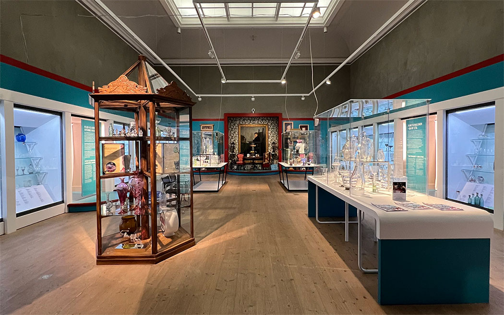
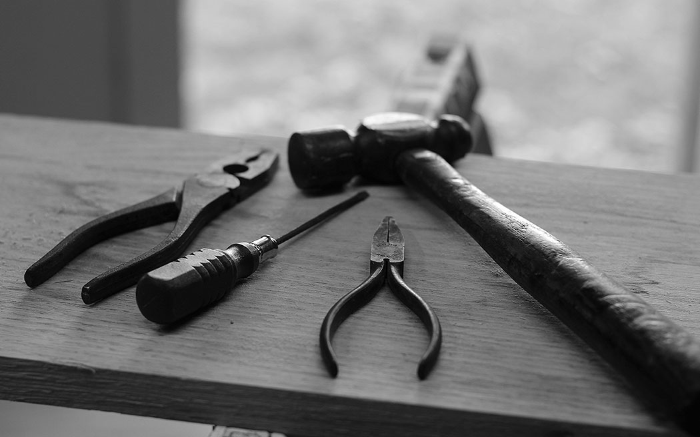

✕
Kommande aktiviteter
okt
Vernissage: Älskade korg
Invigning av utställningen Älskade korg. Utställningen lyfter korgen utifrån perspektiv som hållbarhet, eget skapande och historia. Korgmakare Mikael Svensson inviger, spelar dragspel och berättar historier om korgmakare i Småland.
- Tid och plats: Smålands Museum, kl. 14.00
- Entré: Fri entré hela dagen
- Arrangör: Hemslöjden Kronoberg och Kulturparken Småland
nov
Höstlovskul
Skaparverkstad på Smålands museum. Vi letar efter änglar på museet och därefter skapar vi våra egna änglar med glas och färg. Veckan avslutas med vernissage i Växjö Domkyrka där våra glasänglar ställs ut.
- Dag och tid: Tisdag-fredag, kl. 13.00-14.30
- Plats: Smålands Museum
- Entré: 40kr. Max 20 barn per dag, ålder 7-12. Biljett köps via kulturparkensmaland.se
nov
Julmarknad
Välkommen till Smålands museums stora årliga julmarknad. Lokala producenter av mat och konstantverk medverkar. Inhandla julens förnödenheter och njut av dofter och vackra ting. På museet och i museiparken pågår aktiviteter för hela familien under helgen.
- Dag och tid: Lördag & söndag, kl. 11.00-17.00
- Plats: Smålands Museum
- Entré: Fri entré hela dagen
dec
Museiklubben: Korg
Utställningen Älskade Korg inspirerar oss till att skapa egna korgar i naturmaterial
- Tid och plats: Smålands museum, kl. 13.00-14.30
- Entré: 40 kr. Biljetter via kulturparkensmaland.se
Våningar:
✕
1. Tillfällig utställning
Beskrivning saknas
✕
2. Tillfällig utställning
Beskrivning saknas
✕
3. Hörsal med 60 platser
I denna hörsal finns det möjlighet att lyssna på en föreläsning från en av våra många gästföreläsare.
✕
4. Vargen Yrla
I vår nya barnhörna är det vargen Yrla som står i centrum. Det är en helt och hållet konstgjord varg som vår utställningstekniker Annika har gjort. Man får gärna klappa Yrla, och krypa in i hennes varglya där man kan leka. För vuxna finns det läsning om vargens avtryck i Småland, så här finns nåt för alla!
✕
5. Skogens Konung
Här befinner sig en uppstoppad modell av Sveriges största hjortdjur, älgen, även kallad skogens konung på grund av att de känns igen av dess stora flertaggade krona
✕
Svenskt glas under sex sekler 2.0
Ta del av glasets utveckling i formspråk och teknik under sex århundranden! Från att vara en lyxprodukt endast tillgängligt för de allra rikaste kungar och adelsmän, är glaset idag en dagligvara tillgängligt för vem som helst. Låt dig förtrollas av det äldsta svenska glaset från Hertig Karls 1580-tal till de enkla flaskorna från 1600- och 1700-talet. Överväldigas av borgarnas kristall och charmas av böndernas pressade glas från 1800-talet. Gläds åt den världsberömda formgivningen från 1900-talet och fascineras av nutidens fantastiska glas.
✕
7. Länge leve Kosta
Kosta glasbruk har en obruten tradition av manuell tillverkning sedan 1742 och än glöder det i hyttan. Länge leve Kosta uppmärksammar glaset, bruket och människorna.
Här kan man följa den långa vägen från skiss till färdigt glas och se mångfalden av produkter från snapsglas till unika skulpturer. Utan kreativa konstnärer och skickliga glasarbetare hade glasbruket inte funnits kvar. Tack vare dem har Kostaglaset blivit en viktig del av det svenska kulturarvet.
Utställningen finns på Sveriges glasmuseum.
✕
8. Tillfällig utställning
Beskrivning saknas
✕
9. Orgelsalen - Konst ur samlingarna
Museets stora konstsamling har byggts upp under lång tid. Redan år 1794 inlämnades det första verket, ett porträtt som sades föreställa Nils Dacke. Samlingen har sedan dess växt genom donationer och inköp.
Under åren har museet fokuserat på konst av konstnärer med anknytning till Småland och idag omfattar samlingen omkring 1 000 oljemålningar. Till detta tillkommer även verk i andra material och tekniker.
I Orgelsalen på Smålands museum kan du ta del av ett urval av dessa målningar.
✕
10. Pedagogisk verkstad
En verkstad där både barn och vuxna kan få chansen att skapa olika sorters saker under någon av våra workshops.
Se kommande aktiviteter för mer information.
✕
11. Myntkabinett
Under tidig renässans började lärda och inflytelserika personer att intressera sig för och samla på antika mynt. Mynten var ofta de enda avbildningarna man hade av antikens stora ledare och forna tiders regenter och därför kom mynten även att användas i historieundervisning. Mynten utgjorde även kunskapskälla och illustrationsmaterial i ämnen som konst, geografi och historia.
Vid en rad svenska gymnasier grundades under 1700-talet slut och 1800-talets början mynt- och medaljsamlingar. Grunden till Smålands museums samling lades den 4 september 1792 då Adolph Modéer, sekreterare i Kungl. Patriotiska sällskapet, donerade en större samling mynt till biskop Olof Wallqvist och Växjö gymnasium. Under 1800-talet blev mynten ett komplement i undervisningen i katedralskolor, gymnasier och läroverk.
✕
12. Studioglas i förändring
Studioglas betecknar glas som har formgivits och blåsts av en och samma person i enskilda hyttor eller ateljéer. Utställningen Studioglas i förändring visar studioglasets framväxt och utveckling i Sverige. Här samlas glas från samtida konsthantverkare samt objekt från konstnärer och formgivare som uttrycker sig i glas.
Studioglasrörelsen växte fram under slutet av 1960-talet i Sverige och kan i många stycken ses som en motreaktion på industriglaset. För de tidiga studioglaskonstnärerna var syftet att vinna tillbaka den konstnärliga friheten i arbetet med glaset. Genom att bygga små glasugnar som var lätta att hantera och billiga i drift blev glasformgivning och glashantverk mer tillgängligt och studioglasrörelsen bredde ut sig över världen och i Sverige.
✕
13. Glasdialogen
Välkommen till en konstutställning där Hans Frode presenterar sina antikt inramade målningar på planglas med gjutna applikationer av glas, upplysta genom bakomliggande, olikfärgade neonrör. Utställningens tema är klassiska stilleben i kontemporärt utförande.
✕
14. Trappgalleriet
Beskrivning saknas
✕
15. På väg i 1800-talets Kronoberg
Smålands Museum, landets äldsta länsmuseum, tillkom under 1800-talet. Museets salar och magasin har med tiden fyllts med det förgångnas spår. På väg från ett historiskt sammanhang har de blivit föremål att vårda för kommande generationer. Vad är det för föremål? Vem har skänkt eller köpt dem? Varför? Frågorna är många och i utställningen På väg - i 1800-talets Kronoberg ges prov på svar.
✕

16. Sekelskiftens Växjö och Växjö stadsmodell
Växjö var vid sekelskiftet 1900 en småstad med 7 365 invånare. Domkyrkan, skolorna och funktionen som administrativt centrum för Kronobergs län gav staden sin prägel. Handel och hantverk dominerade näringslivet och förutom en tändsticksfabrik, en mekanisk verkstad och ett bryggeri saknade Växjö större industrier. Politiskt var Växjö konservativt och de idébärande folkrörelserna hade svårt att nå framgång med sina budskap om organiserad nykterhet, socialism och ett friare kyrkoliv.
Fotografierna i utställningen är hämtade ur Betty Larssons samling som förvaras på Kulturarvscentrum Småland. Hon var verksam som fotograf i Växjö 1895-1912, med ateljé på Sandgärdsgatan 22. År 1912 flyttade hon med familjen till Kristianstad, där hon fortsatte sin verksamhet som fotograf in på 1920-talet.
Utställningen finns på Smålands museum.
✕
17. 13 00 år - forntiden nära oss
Spåren av människor från andra tider finns runt omkring oss och överallt i landskapet. Ibland väl synligt och uppmärkt med skyltar och ibland i jorden under våra fötter. I utställningen 13 000 år får du en bild av livet från stenålder till järnålder. I utställningen får du uppleva hur landskap och klimat har förändrats sedan inlandsisen smälte bort för 13 000 år sedan och hur människor levt här i Kronoberg genom tiderna.
Utställningen vill också visa hur arkeologer hittar spår och hur dessa tolkas när vi ska försöka förstå och lära om människors vardag i forna tider. Dessutom finns exempel på föremål från museets samlingar på plats, allt från den äldsta pilspetsen till vikingatida gravfynd!
✕
18. Kommande utställning
Beskrivning saknas
Ta trappan till vänster
Take the stairwell to the left
Entréplan:
1. Tillfällig utställning
Temporary exhibitions2. Tillfällig utställning
Temporary exhibitions3. Hörsal med 60 platser
Auditorium with 60 seats4. Vargen Yrla
Yrla the wolf
5. Skogens Konung
King of the woods6. Svenskt glas under sex sekler 2.0
Sex centuries of Swedish glass 2.07. Länge leve Kosta
Long live Kosta
Plan 1:
8. Tillfällig utställning
Temporary exhibitions9. Orgelsalen -
Konst ur samlingarna
The organ hall -
art from our collections10. Pedagogisk verkstad
Educational workshop11. Myntkabinett
Coin cabinet12. Studioglas i förändring
The studio glass revolution13. Glasdialogen
Glass dialog gallery
14. Trappgalleriet
Stair gallery15. På väg i 1800-talets
Kronoberg
On the way - 19th century
Kronoberg16. Sekelskiftens Växjö
och Växjö stadsmodell
Turn of the century Växjö
and city model of Växjö17. 13 00 år -
forntiden nära oss
13 000 years -
pre history in Småland18. Kommande utställning
Upcoming exhibition